Three directions, one concept each, shown in their proposed colour. Wordmark: Geist (OFL), “one” at weight 600, “MK” drawn as small capitals at 88 % height and weight 660, so their stems match.
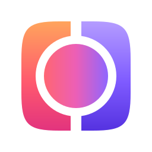
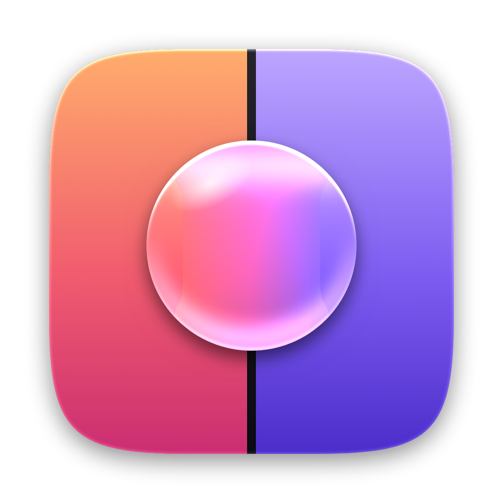
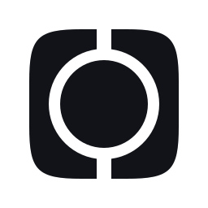
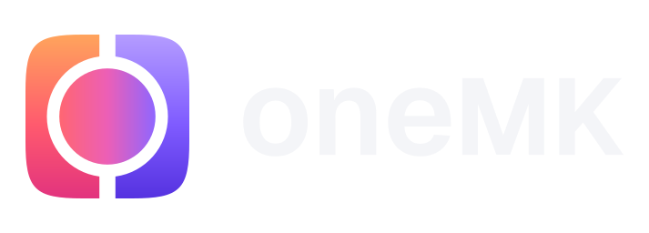
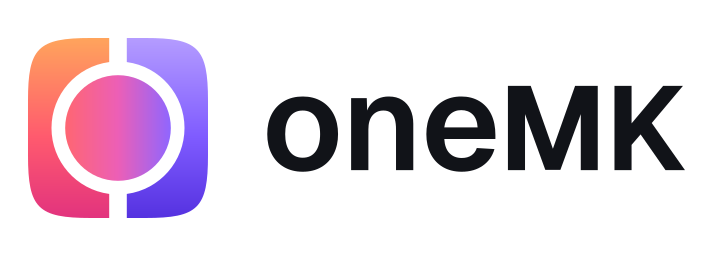
A glass lens sits on the seam between two screens; seen through it, the two are one picture.
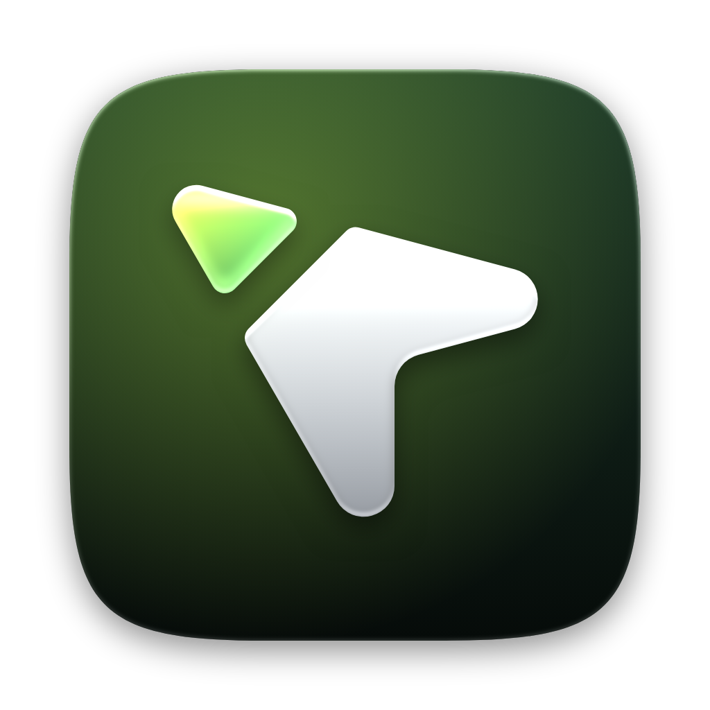
A pointer cut by the screen edge: its tip has already crossed and lights up on the next computer.
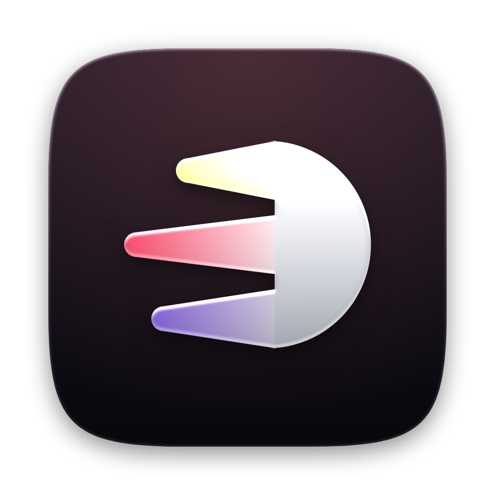
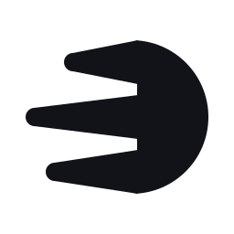
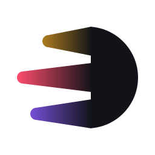
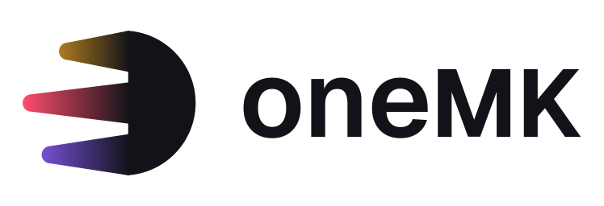
Three trails of colour, one per computer, run into one solid point.